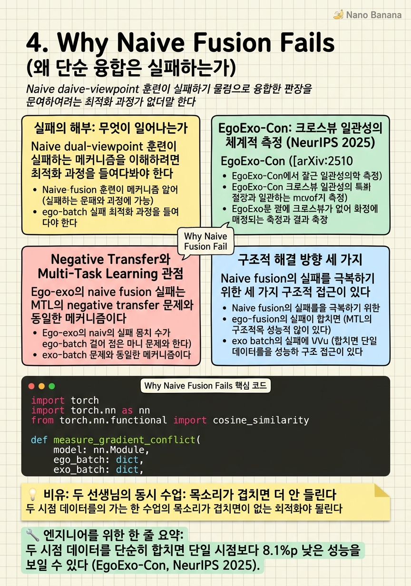

Why Naive Fusion Fails

🎯 학습 목표
- Naive dual-viewpoint 훈련이 single-viewpoint 대비 성능이 낮은 현상을 구체적 수치로 설명할 수 있다
- 이 실패의 근본 원인을 최적화 목표 충돌과 분포 차이 관점에서 분석할 수 있다
- EgoExo-Con(NeurIPS 2025) 논문의 실험 설계와 핵심 발견을 설명할 수 있다
- 이 문제를 해결하기 위한 방향 세 가지를 제안할 수 있다
Ego-exo 연구에서 가장 중요하고 반직관적인 발견 중 하나는 단순히 두 시점 데이터를 합쳐 훈련하면 오히려 성능이 나빠진다는 것이다. 직관적으로는 더 많은 데이터와 더 다양한 시점이 도움이 될 것 같지만, 실험 결과는 정반대다.
EgoExo-Con ([arXiv:2510.26113](https://arxiv.org/html/2510.26113), NeurIPS 2025)은 이 현상을 체계적으로 측정했다. CharadesEgo의 G-ExoEgo 일관성 메트릭에서 TimeSuite 모델의 결과:
| 훈련 설정 | G-ExoEgo 점수 |
|---|---|
| Exo-only | 59.5% |
| Dual-viewpoint (EgoExo) | 51.3% |
| 갭 | -8.1% |
단일 exo 뷰만으로 훈련한 것보다 ego와 exo를 함께 훈련했을 때 8.1%p가 낮다. 이 패턴은 테스트한 4개 모델 모두에서 관찰됐다. 이 발견은 뷰 융합이 공짜 점심(free lunch)이 아니라는 것을 명확히 한다 — 구조적 정렬과 의미 있는 크로스뷰 연결 없이는 두 시점이 서로를 방해한다.
핵심 내용
실패의 해부: 무엇이 일어나는가
Naive dual-viewpoint 훈련이 실패하는 메커니즘을 이해하려면 최적화 과정을 들여다봐야 한다. 모델이 ego 비디오와 exo 비디오를 함께 받아 각각을 이해하도록 훈련된다고 할 때, 문제는 두 분포의 근본적 이질성에서 시작한다.
분포 충돌(distribution conflict): Ego 비디오의 통계적 특성(모션 패턴, 배경 분포, 객체 크기 분포)이 exo와 다르다. 모델은 두 분포를 동시에 설명해야 하므로 어느 쪽에도 최적화하지 못한 절충안으로 수렴한다.
특징 공간 오염(feature space contamination): 공유된 인코더가 ego와 exo의 특징을 같은 공간에 매핑하려 한다. 하지만 두 뷰의 같은 활동이 시각적으로 매우 다르게 보이기 때문에, 활동에 불변하면서도 뷰에 불변한 표현을 학습하기가 극히 어렵다.
그래디언트 충돌(gradient conflict): 두 뷰에서 온 손실 그래디언트가 파라미터 업데이트 방향을 놓고 충돌한다. Ego 샘플은 특정 방향으로 가중치를 밀고, exo 샘플은 다른 방향으로 민다. 이 충돌이 수렴을 방해한다.
MTL(Multi-Task Learning) 연구에서 이미 알려진 negative transfer 현상과 동일하다. 서로 관련은 있지만 분포가 다른 작업들을 단순 공동 훈련하면 각 작업을 독립적으로 훈련할 때보다 성능이 낮아질 수 있다.
EgoExo-Con: 크로스뷰 일관성의 체계적 측정 (NeurIPS 2025)
EgoExo-Con ([arXiv:2510.26113](https://arxiv.org/html/2510.26113))은 NeurIPS 2025에서 발표된 크로스뷰 일관성 벤치마크 및 분석 논문이다. 핵심 기여는 G-ExoEgo 메트릭의 도입이다 — 같은 활동을 ego와 exo 두 시점에서 쿼리했을 때 모델의 응답이 얼마나 일관된지를 측정한다.
실험 대상 모델: VideoChat2, Video-LLaMA2, TimeChat, TimeSuite (총 4개의 대표적 비디오 LLM).
공통 발견:
- 모든 모델에서 dual-viewpoint 훈련 < exo-only 훈련 - 특히 ego 비디오에서 쿼리할 때 성능 저하가 심함 - 모델이 exo 분포에 편향되어 있어 ego 쿼리에 적응하지 못함
이 결과가 가진 의미:
1. 단순 데이터 증가로는 해결 안 됨: 더 많은 ego 데이터를 추가하더라도 naive 훈련 방식으로는 근본 문제를 해결하지 못한다 2. 정렬이 핵심: 두 뷰를 단순 concatenation이나 early/late fusion이 아닌, 구조적으로 정렬된 방식으로 다뤄야 한다 3. 뷰-특정 어댑터의 필요성: 뷰에 따라 다른 프로세싱 경로나 어댑터가 필요할 수 있다
Negative Transfer와 Multi-Task Learning 관점
Ego-exo의 naive fusion 실패는 MTL의 negative transfer 문제와 동일한 메커니즘이다. MTL 연구([Standley et al., 2020](https://arxiv.org/abs/1905.07553))는 어떤 태스크를 함께 훈련해야 도움이 되고 어떤 것은 해가 되는지가 비자명하다는 것을 보였다.
Ego-exo 맥락에서 두 뷰는 '같은 태스크의 다른 데이터 소스'처럼 보이지만, 실제로는 서로 다른 분포를 가진 두 도메인이다. 이를 단순히 병합하는 것은 두 도메인을 동시에 학습하면서 어느 쪽에도 최적화되지 않는 결과를 낳는다.
그래디언트 코사인 유사도 분석:
\[\cos(\nabla_{\theta} \mathcal{L}_{\text{ego}}, \nabla_{\theta} \mathcal{L}_{\text{exo}}) < 0\]
두 손실의 그래디언트가 반대 방향을 가리키는 경우(코사인 유사도가 음수), 두 태스크는 서로 방해한다. Ego-exo에서 이 값이 얼마나 음수인지, 그리고 어느 레이어에서 가장 충돌이 심한지 분석하는 것이 흥미로운 연구 방향이다.
구조적 해결 방향 세 가지
Naive fusion의 실패를 극복하기 위한 세 가지 구조적 접근이 있다.
1. 크로스뷰 정렬 사전훈련(Cross-View Alignment Pre-training): 두 뷰를 동시에 넣기 전에 먼저 대응점을 학습하는 자기지도 사전훈련 단계를 추가한다. CCMP(챕터 3)처럼 두 뷰 간의 의미적 대응을 먼저 학습하면, 이후 파인튜닝에서 두 뷰가 더 잘 정렬된 특징 공간에서 만난다.
2. 뷰-어댑티브 아키텍처(View-Adaptive Architecture): 공유 인코더 + 뷰-특정 어댑터 구조를 사용한다. 공통 특징은 공유 인코더에서 추출하되, ego와 exo의 뷰-특정 통계를 다루는 어댑터 레이어를 별도로 둔다. 이는 두 뷰 간의 부정적 전이를 줄이면서 공통 표현을 활용한다.
3. 적응적 뷰 가중치(Adaptive View Weighting): 태스크와 입력에 따라 두 뷰의 기여를 동적으로 가중한다. 손 움직임을 물어보는 쿼리에는 ego 가중치를 높이고, 전신 자세를 물어보는 쿼리에는 exo 가중치를 높이는 메커니즘. Cross-attention을 통해 이를 학습으로 달성할 수 있다.
💡 비유로 이해하기
Naive dual-viewpoint 훈련을 같은 교실에서 두 선생님이 동시에 다른 목소리로 수업하는 것에 비유할 수 있다. 두 선생님 모두 같은 과목(활동 이해)을 가르치지만, 한 명은 한국어로(ego 시점의 손-물체 관점), 다른 한 명은 영어로(exo 시점의 전신 관점) 말한다.
학생(모델)은 두 목소리를 동시에 들으면서 양쪽 모두를 이해하려 한다. 결과적으로 어느 선생님도 제대로 이해하지 못하게 된다 — 두 언어를 동시에 처리하는 인지 부하가 너무 크다. 차라리 한 선생님의 수업만 들을 때 더 잘 이해한다.
해결책은? 먼저 두 언어 간의 번역 사전(크로스뷰 대응 사전훈련)을 만들어 두거나, 각 선생님의 강점에 따라 번갈아 집중하는 체계(적응적 뷰 가중치)를 갖추거나, 두 목소리를 체계적으로 통합하는 통역사(크로스뷰 attention)를 두는 것이다.
💻 코드 예시
Naive fusion과 구조적 정렬 fusion을 비교하는 간단한 실험 코드다. 그래디언트 충돌을 측정해 naive fusion의 문제를 시각화한다.
import torch
import torch.nn as nn
from torch.nn.functional import cosine_similarity
def measure_gradient_conflict(
model: nn.Module,
ego_batch: dict,
exo_batch: dict,
criterion: nn.Module,
) -> float:
"""Ego 손실과 exo 손실의 그래디언트 코사인 유사도를 계산."""
# Ego 손실 그래디언트
model.zero_grad()
ego_loss = criterion(model(ego_batch["video"]), ego_batch["label"])
ego_loss.backward()
ego_grad = torch.cat([
p.grad.flatten() for p in model.parameters() if p.grad is not None
])
# Exo 손실 그래디언트
model.zero_grad()
exo_loss = criterion(model(exo_batch["video"]), exo_batch["label"])
exo_loss.backward()
exo_grad = torch.cat([
p.grad.flatten() for p in model.parameters() if p.grad is not None
])
model.zero_grad()
# 코사인 유사도: 음수 = 충돌, 양수 = 협력
cos_sim = cosine_similarity(ego_grad.unsqueeze(0), exo_grad.unsqueeze(0))
return cos_sim.item()
class ViewAdaptiveFusion(nn.Module):
"""뷰-어댑티브 late fusion: 쿼리에 따라 뷰 가중치를 동적으로 결정."""
def __init__(self, feat_dim: int = 768):
super().__init__()
# 쿼리 기반 뷰 가중치 예측
self.view_gate = nn.Sequential(
nn.Linear(feat_dim, 128),
nn.ReLU(),
nn.Linear(128, 2), # [ego_weight, exo_weight]
nn.Softmax(dim=-1),
)
def forward(
self,
ego_feat: torch.Tensor, # [B, feat_dim]
exo_feat: torch.Tensor, # [B, feat_dim]
query_feat: torch.Tensor, # [B, feat_dim]
) -> torch.Tensor:
# 쿼리에 따라 어느 뷰에 더 집중할지 결정
weights = self.view_gate(query_feat) # [B, 2]
fused = weights[:, 0:1] * ego_feat + weights[:, 1:2] * exo_feat
return fused
measure_gradient_conflict는 Naive fusion의 핵심 문제를 수치로 드러낸다. 코사인 유사도가 음수라면 두 뷰의 그래디언트가 충돌하고 있다는 증거다. ViewAdaptiveFusion은 쿼리의 의도에 따라 동적으로 뷰 가중치를 결정하는 간단한 게이팅 메커니즘이다.
🏭 현업에서의 평가
✅ 시니어가 보는 것
- EgoExo-Con의 8.1% 성능 저하 실험 결과를 인용하고 그 의미를 설명하는 능력
- Negative transfer를 MTL 문헌의 맥락에서 이해하고 ego-exo에 적용하는 능력
- 그래디언트 충돌을 수식으로 표현하고 어느 레이어에서 발생할지 예측하는 능력
- 구조적 해결책(대응점 사전훈련, 뷰-어댑터, 적응적 가중치)을 구체적으로 제안
⚠️ 레드 플래그
- '두 시점을 합치면 무조건 좋다'는 가정을 가진 경우
- Negative transfer를 모르는 경우
- 해결책으로 단순히 '더 많은 데이터'나 '더 큰 모델'만 제안하는 경우
🎤 예상 인터뷰 질문
- EgoExo-Con에서 관찰된 dual-viewpoint 훈련의 성능 저하를 gradient conflict 관점에서 설명하라.
- 이 negative transfer 문제를 해결하기 위해 architecture 설계 단계에서 어떤 선택을 해야 하는가?
- Ego 데이터를 더 많이 추가하면 이 문제가 해결되는가? 왜 아닌가?
✨ 핵심 요약
Naive Fusion의 반직관적 실패
두 시점 데이터를 단순히 합치면 단일 시점보다 8.1%p 낮은 성능을 보일 수 있다 (EgoExo-Con, NeurIPS 2025).
그래디언트 충돌이 근본 원인
Ego와 exo 손실의 그래디언트가 반대 방향을 가리켜 최적화를 방해한다.
Negative Transfer 현상
이 실패는 MTL에서 잘 알려진 negative transfer의 ego-exo 버전이다.
분포 충돌이 원인
Ego와 exo의 시각적 통계가 근본적으로 달라 단일 모델이 양쪽을 동시에 최적화하기 어렵다.
구조적 정렬이 해답
사전훈련 기반 정렬, 뷰-어댑터, 적응적 가중치 — 단순 데이터 병합이 아닌 구조적 해결이 필요하다.
뷰 융합 = 미해결 문제
EgoExo-Con은 이 문제를 공식화했지만, 그 해결책은 아직 연구 중이다.